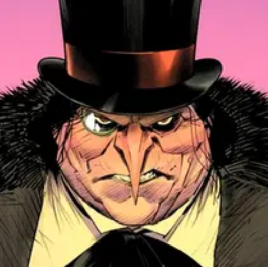
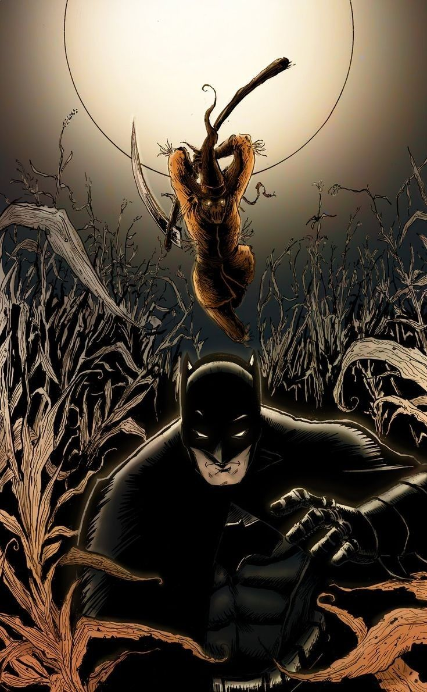
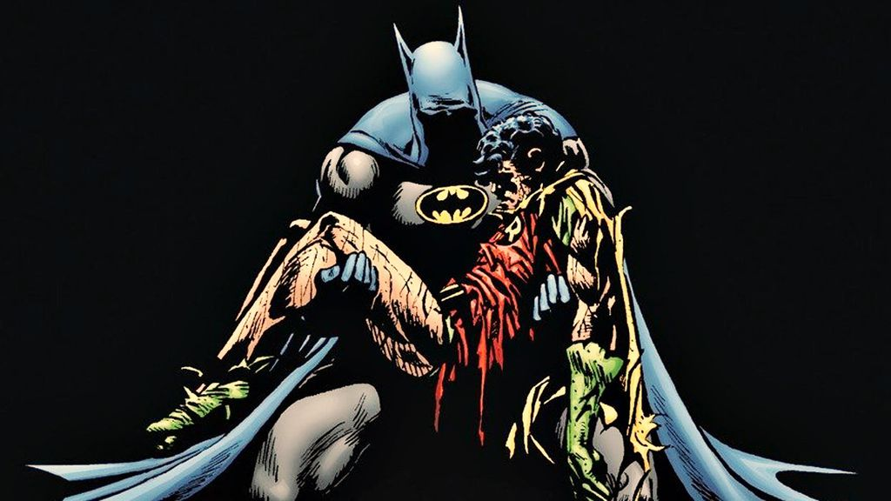

O heroi mais esperto.
Batman é o justiceiro da cidade!
O brabo dos morcegos.
NOTÍCIAS
BATMAN SALVA GOTHAN DO SUPERVILÃO CORINGA MAIS UMA VEZ
No dia 21 de agosto de 2016, o terror de Gothan mais uma vez é derrotado pelo morcego nas sombras.
Após uma boa parte da cidade ter sido atingida pelo confronto dentre o herói e vilão , o morcego mais famoso do mundo derrota aquele que se tornou o pesadelo de Gothan em um confronto histórico
saiba mais...CORINGA ESCAPA DAS MÃOS DE BATMAN

no dia 23 de agosto de 2016, o vilão Coringa escapa das mãos de coringa à caminho da prisão
Segundo algumas fontes anônimas, o vilão já esperava ser pego pelo herói morcego, então acabou armando um plano ardiloso muito antes de tudo ter acontecido
Saiba mais...BATMAN DERROTA O VILÃO"CAVELIRO DO CRIME" PINGUIM

No dia 29 de setembro de 2016, O cavaleiro do crime foi capturado pelo morcego
Após Pinguim ter feito um estrago em Gothan, o Cavaleiro das Trevas chega e acaba com toda a diversão do vilão!
Saiba mais...PIMGUIM FUGIU DA PRISÃO E FOI PEGO NOVAMENTE

No dia 30 de setembro de 2016, Pinguim escapa da prisão porém é capturado
Após a derrota de Pinguim pelo herói Batman na noite passada, o vilão tenta escapar da prisão nessa madruga, mas o herói já esperava a tentativa de fuga prescipitada do vilão
Saiba mais...HERA VENENOSA ATACA NOVAMENTE

No dia 14 de outubro de 2016, Hera venenosa ataca a prefeitura de Gothan mas é interceptada pelo morcegão.
Após Hera venenosa ter roubado a prefeitura de Gothan, Batman A captura e devolve todo o dinheiro roubado pela vilã
Saiba mais...HERA VENENOSA ESCAPA DA PRISÃO

No 18 de outubro de 2016, Hera venenosa consegue escapar da prisão debaixo do nariz de Batman
Depois de ser presa, hera venenosa usa as suas plantas e cava um buraco em sua sela e consegue fugir da prisão
Saiba mais...ESPANTALHO É PEGO PELO MORCEGO DE GOTHAN

No dia 7 de novembro de 2016, o vilão conhecido como Espantalho tenta atacar o prefeito porém é capturado por Batman
Segundo fontes anônimas, o espantalho tem armado esse plano durante um bom tempo para capturar o prefeito e dominar a cidade, porém o Cavaleiro das trevas não permitiu que isso acontecesse tão cedo
Saiba mais...A MORTE DE ROBIN, O VERDADEIRO PARCEIRO DE BATMAN

No dia 25 de novembro de 2016, Coringa causa a morte de Robin após um golpe sujo
Depois de supostamente terem neutralizado o vilão, Coringa levanta e atira na cabeça de Robin pelas costas, causando a morte do unico parceiro de Batman
saiba mais...